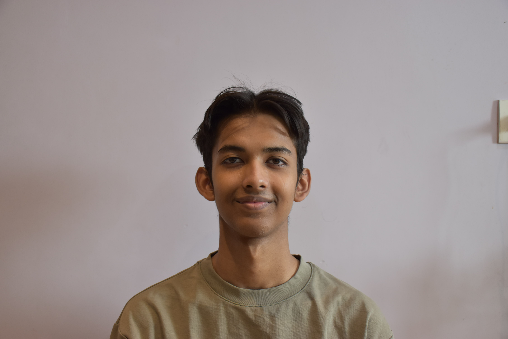
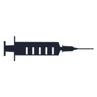

Asmit Datta (He/Him)
Student at Arizona State University, Building Lynti
Tempe, Arizona, United States · Contact info
28 connections
Open to work
Software Engineer and Frontend Web Developer roles
Show details
Services
Application Development • Database Development • Web Design • Web Development • Software Testing • Mobile Application Development • 3D Design • Video Production • Video Editing
Experience
Frontend Developer
Flickmatch | Jan 2023 – Jul 2023
- Specialized in minimal interface design using HTML and Figma to create engaging web experiences.
- Leveraged marketing strategies with UI design to enhance brand presence on social media platforms.
- Tech stack: Figma, Adobe Premiere Pro
Education
Arizona State University
BS, Computer Science | Expected Graduation: 2026
Delhi Public School - R.K. Puram
High School Diploma, Computer Science
Projects
Lynti
Dec 2024 – Present
- As the Founder of a transportation business connecting Shillong and Guwahati, I streamlined services to boost local tourism and empower drivers economically.
- Tech stack: Node.js, React Native, Figma, Tailwind CSS, PlacesAPI, NeonDB, ClerkDB
JobifyASU
May 2024 – Present
- Developed a job application tool on Python using web scraping to match ASU students with compatible jobs.
- Implemented algorithms to analyze job postings for the best fit.
- Reduced job application time by 85%, improving efficiency and accuracy.
- Tech stack: Python, Selenium, ClerkDB
Volunteering

Founder
CovreliefDwarka | May 2020 – Sep 2020 (5 mos) | Health
- Ran a successful campaign involved in collecting essential information from economically disadvantaged workers who were unfamiliar with vaccine registration technology and stored them in a database, enabling Covrelief to vaccinate 100+ people.
- Used skills: HTML, CSS, ClerkDB
Publications
Research Assistant
Deen Dayal Upadhyaya University · Aug 13, 2024
- Developed machine learning models to predict heart disease risk, achieving a model accuracy of 86.96% using Gaussian Process Classifier.
- Utilized PyTorch for neural network development and scikit-learn for data preprocessing, improving workflow efficiency and model performance.
- Applied advanced data processing techniques (e.g., outlier detection, normalization) to enhance prediction reliability.
- Deployed models using TreeHugger, enabling scalable and accessible healthcare diagnostics.